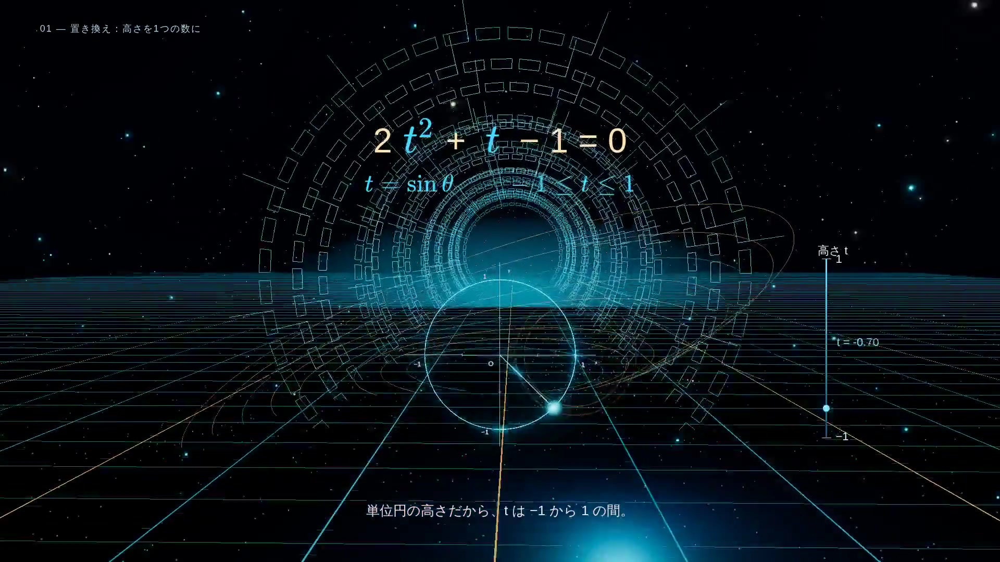
sinθがtへ移動・縮小。単位円の高さと光の数直線が同期。
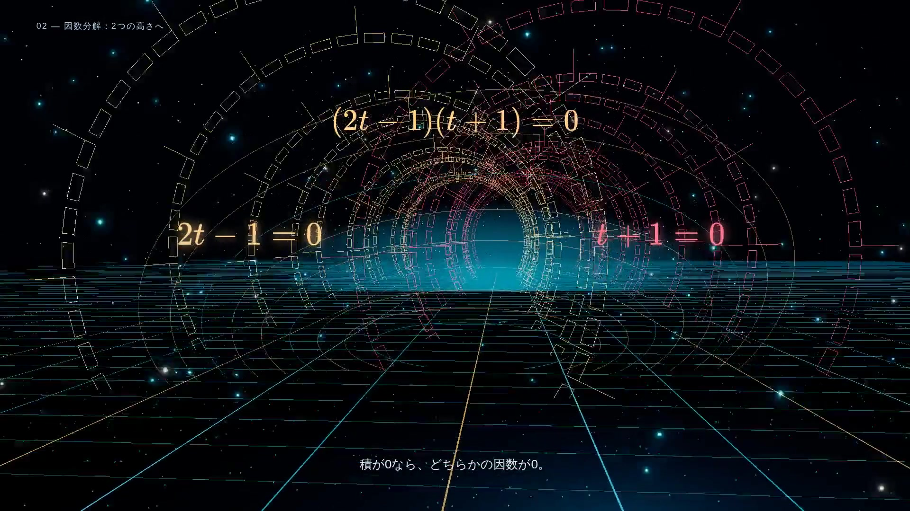
2つの因数と、背景のリングが別の方向へ分かれる。
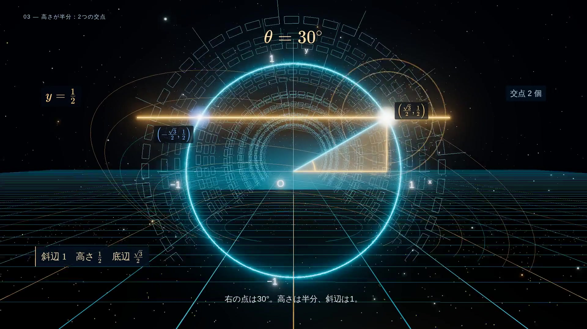
水平線・交点・半径・直角三角形を同じ座標から構築。
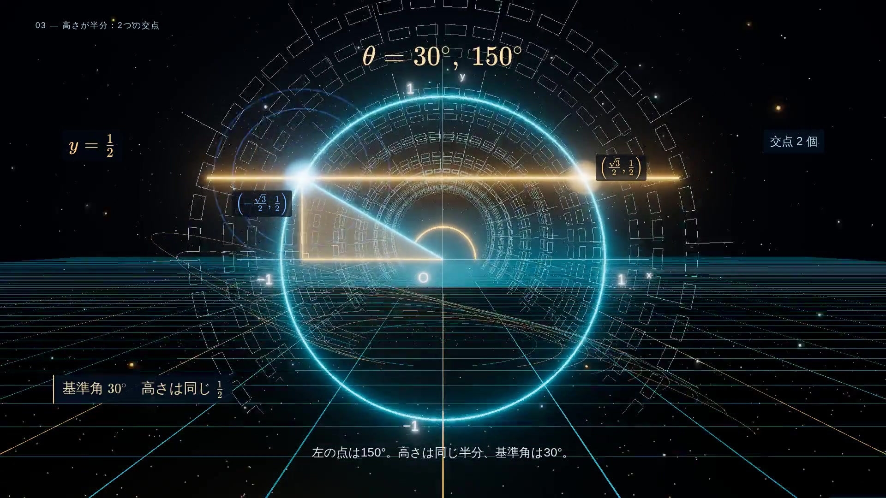
反時計回りに回転しても、終点の高さは同じ半分。
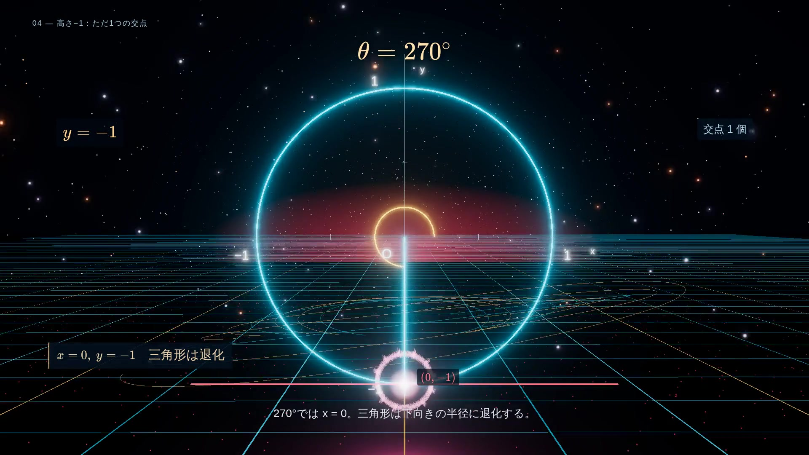
x=0、y=−1。三角形は通常の三角形として表示せず、半径へ退化。
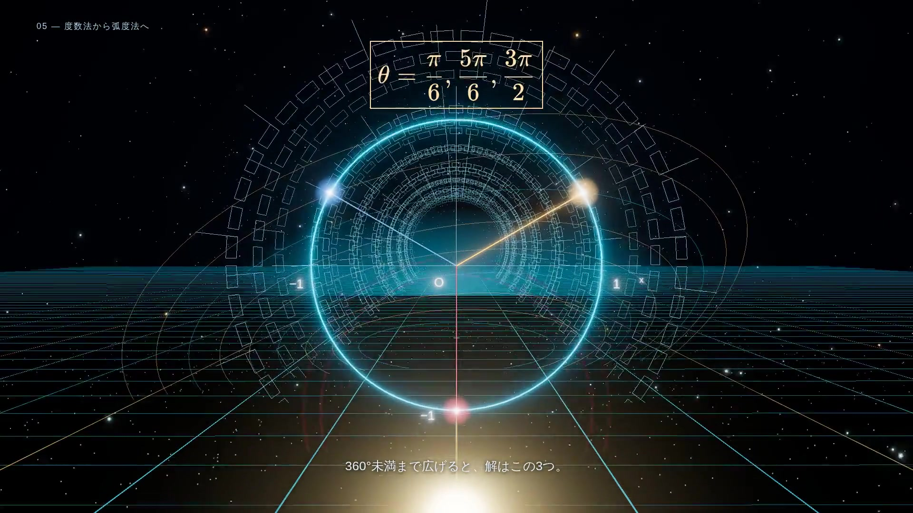
3つの解を、πを使う縦の分数で表示。
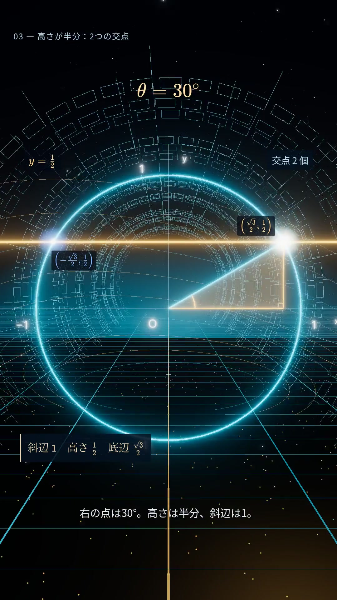
縦9:16の画角に、数式・図形・座標を配置。
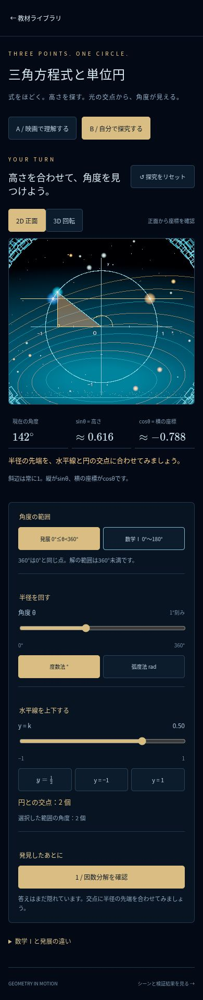
角度・高さ・範囲・2D/3D・度/ラジアンを切り替える。
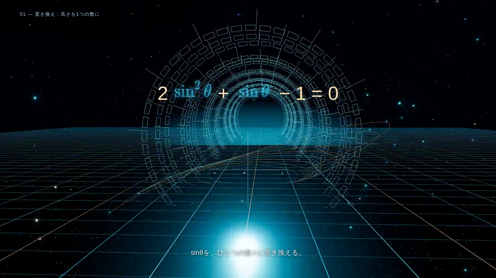
文字が縮小・回転・移動して、同じ式のtへ変わる。
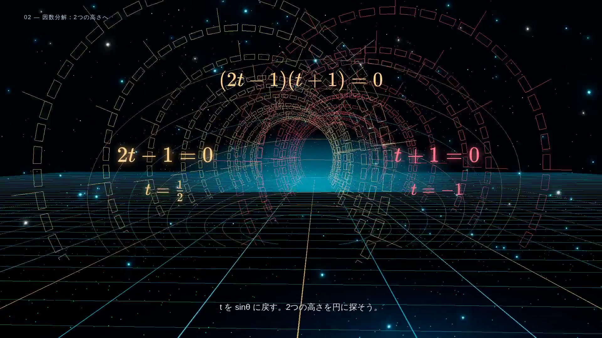
金色と赤色で、半分と−1の2つの解を示す。
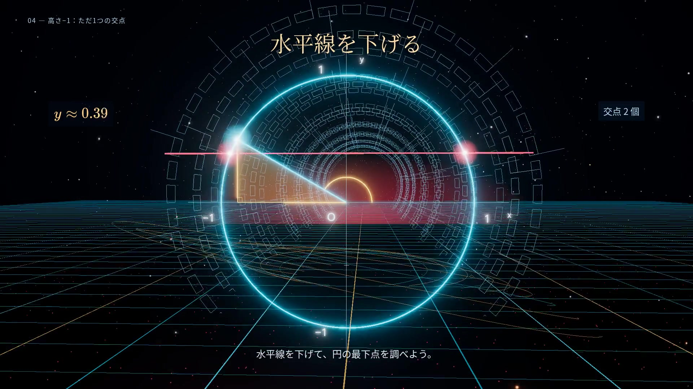
水平線の高さと、2つの交点が連動して動く。